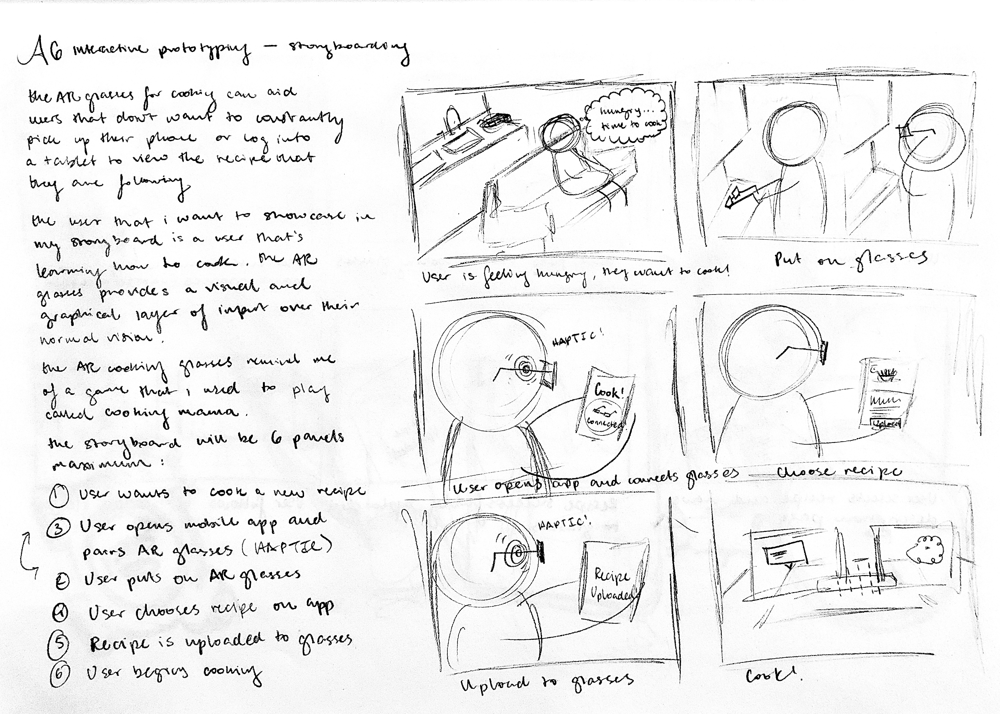
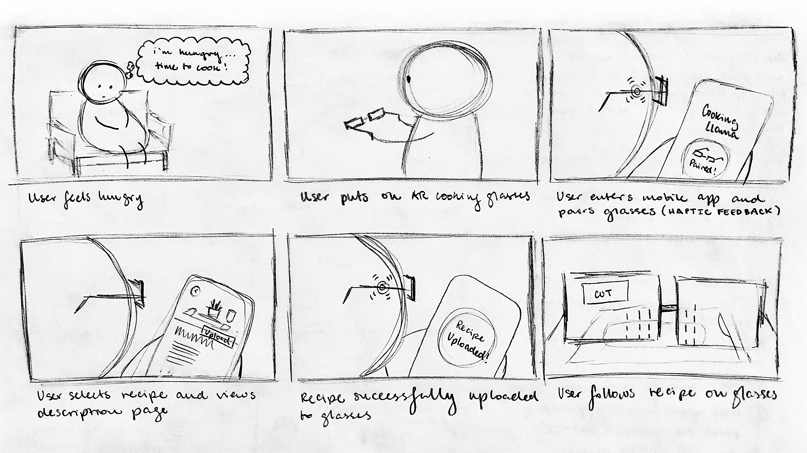
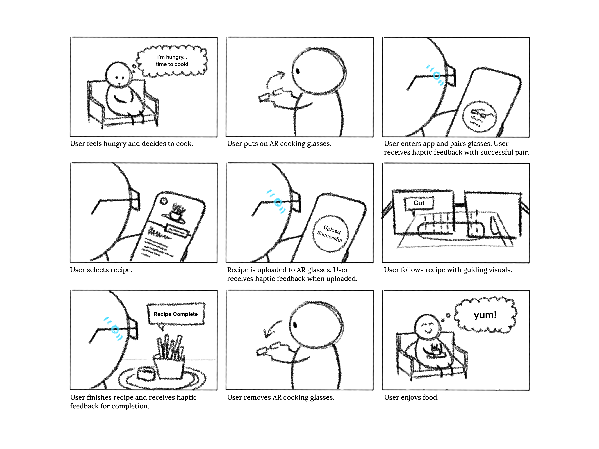
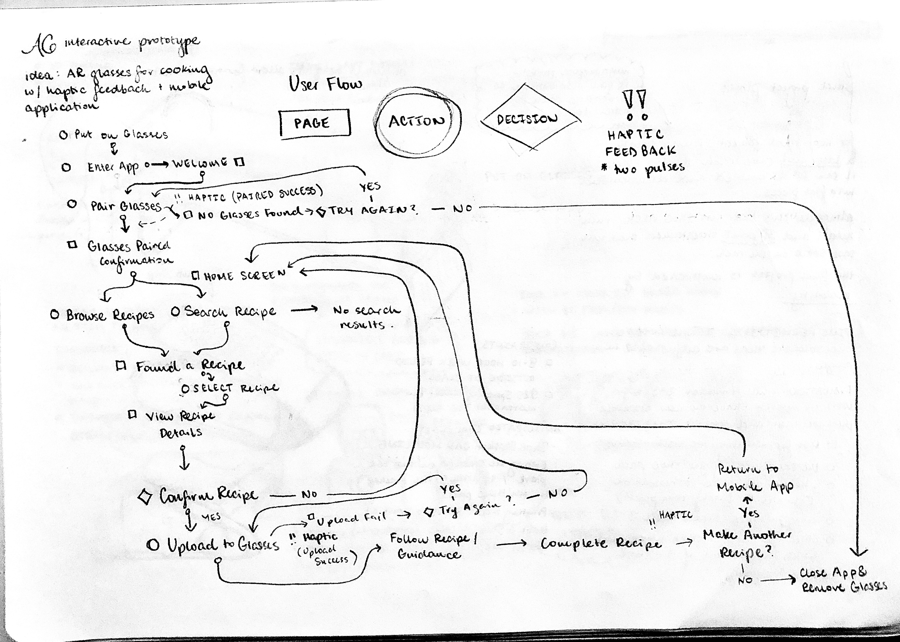
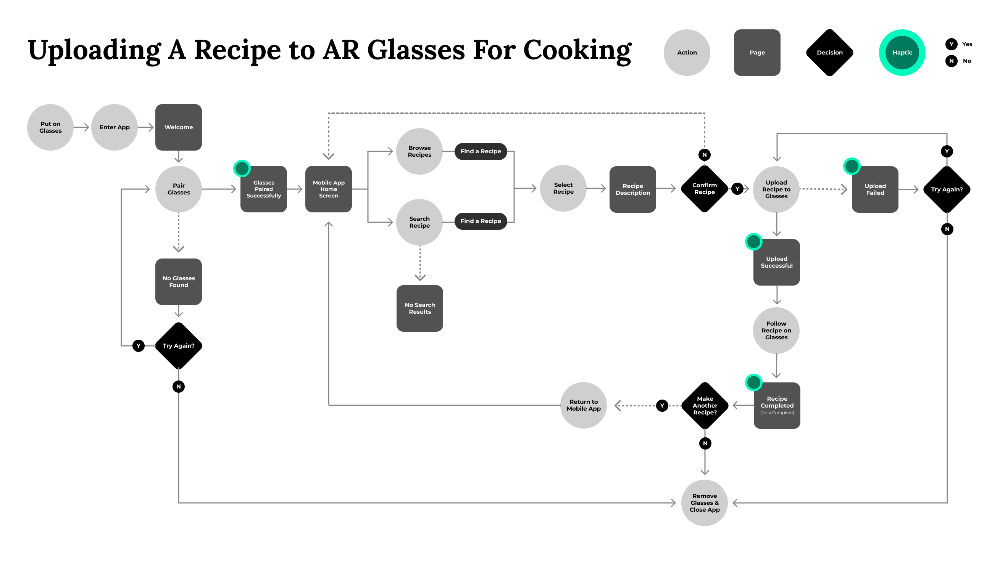
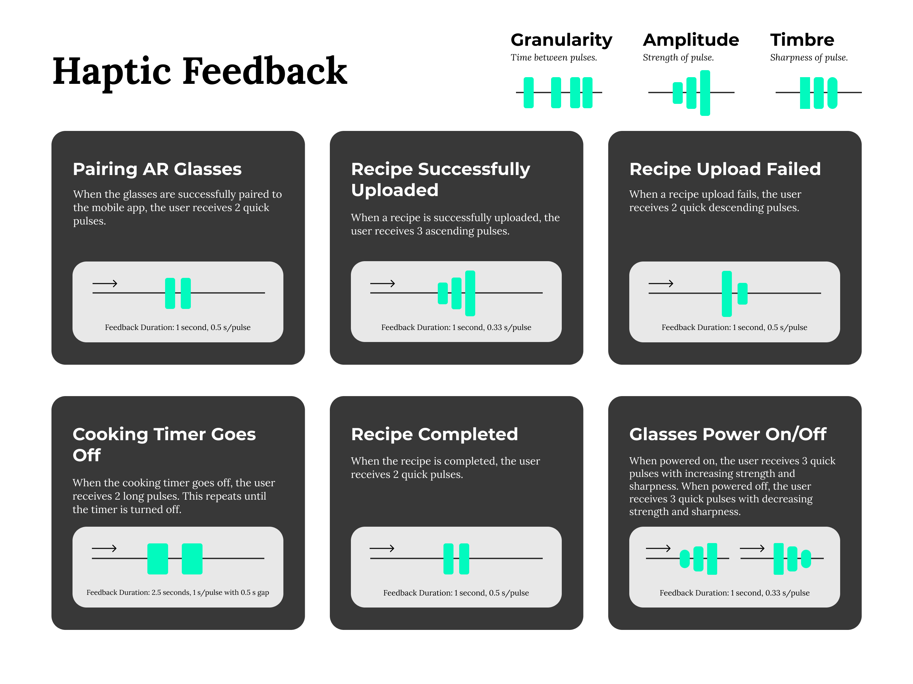

A6: Interactive Prototype
December 6, 2021

The Goal
Design an application that has both a mobile and wearable component. Deliver the user flow of the complete experience, a storyboard and graphical representation of haptic responses for the user, and a clickable greyscale lo-fi prototype of the mobile application.
The Design
For this assignment, I designed an augmented reality cooking experience that's supported by the Cooking Llama mobile application (inspired by the Japanese video game series, Cooking Mama) and AR glasses with haptics. Designed with beginner cooks in mind, the idea is that users can wear these AR glasses and view the recipe, guiding instructions, helpful tips, and be notified of cooking time completion without having to pick up a phone or tablet to check this information themselves during the cooking process. Users select and upload recipes to the AR glasses using the mobile application, and the glasses provide haptic feedback throughout the cooking journey.
Storyboarding
Once I had my idea, I began storyboarding to illustrate the user's complete experience. I sketched this in my sketchbook first, before redrawing it digitally. The storyboard showcases the user feeling hungry, putting on the AR glasses, entering the app, selecting and uploading a recipe, cooking with the glasses on, and completing the dish successfully.
  Storyboard (Click to See in New Tab)
User Flow
After storyboarding, I created a sketched a rough user flow for the experience, largely focusing on the mobile application experience, before creating the final user flow using Figma.
 Haptics
Creating the user flow helped me think through what kinds of haptics the AR glasses would have. Here are the haptic patterns I came up with:
Lo-Fi Interactive Prototype
Once the storyboarding, user flow, and haptics were complete, I worked on developing the wireframes for the mobile application and making it interactive. Users can test the experience of entering the app, 'connecting' their AR glasses, selecting a recipe, and uploading the recipe to the glasses.
User Testing
In addition to sharing my deliverables with 3 classmates for critique, I conducted one user test with one of my neighbors. During this user test, I first explained the overall idea to the user before asking them to review and critique my storyboard, user flow, haptics graphical representation, and interactive prototype. I encouraged my user to think aloud during the user test and to specifically mention what they liked, didn't like, and what they may have found useful about the design. By giving the user my deliverables on my iPad, I was able to have them annotate directly on my designs.